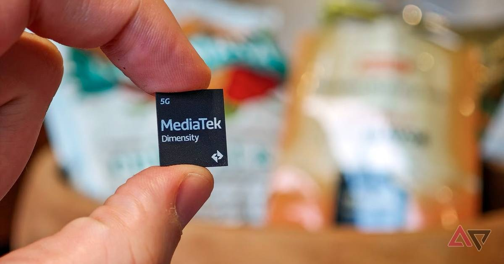

MediaTek Online Assessment Experience (2026)
Location: Banglore | Stipend: 55000 (approx 11 months) | PPO: 27LPA (if convert)

I recently completed the MediaTek Online Assessment (OA). To be honest, the exam was extremely challenging mainly because the coding round allowed only C language.
Most of my classmates also felt the same. Some questions were manageable, but overall the test was quite tough and required strong fundamentals in C programming and digital logic.
---Section 1 – Aptitude Round
The aptitude section consisted of logical and quantitative problems.
- Age calculation problems
- 3D cube puzzle – count how many blocks are not painted
- Rectangle shadow problem – calculate total area
- Matrix pattern question – diagonal blocks in 2×2, 4×4, 6×6, 8×8 and find for the 10th matrix
- Time and work problem – example: 7 people clean 7 floors in 7 hours. How long will 3 people take to clean 3 floors?
- Profit and loss percentage questions
The questions required quick reasoning and pattern recognition.
---Section 2 – Digital Logic Round
Most of the questions were related to flip-flops and digital circuits.
- Three JK flip-flops connected together – predict the output
- 4-bit left shift counter output sequence
- D flip-flop output prediction
- Excess-3 BCD code conversion questions
- De Morgan’s law logic questions
- Hexadecimal stack pointer / counter questions
Students from ECE or VLSI background may find this section more comfortable.
---Section 3 – C Code Snippet Questions
This was one of the most difficult sections. It focused deeply on C programming fundamentals.
- Predict output of C programs
sizeof(struct)related questions- Pointer arithmetic like
++(*p) - Complex pointer manipulation
- Macro definition and macro expansion behavior
- Difference between macro evaluation vs function evaluation
- Array pointer arithmetic questions
Example style question:
int c = printf("%c%c", "h", "l");
There were also multiple operations inside printf() where we had to
predict the final output.
One macro question actually trapped me. I already knew the concept before, but during the exam I made a mistake. After the exam my friends explained it and I realized the trap.
---Section 4 – Coding Round
The final round consisted of two coding problems.
- Find the unique number in an array
- Swap specific bits in given positions
Both problems were related to bit manipulation and were easy to medium difficulty.
However, the major challenge was that the platform allowed only C language.
In the job description it mentioned C / C++, but in the OA only C was allowed. This surprised many students during the exam.
---My Advice for Semiconductor Placements
If you are from VLSI, ECE, CSE or AIML and applying to semiconductor companies, you should focus heavily on:
- C programming fundamentals
- Pointer arithmetic
- Macros and memory concepts
- Digital logic and flip-flops
- Bit manipulation problems
Do not rely only on C++ or high-level languages.
C means C only C.
---MediaTek Semiconductor C Programming Placement Experience Digital Logic